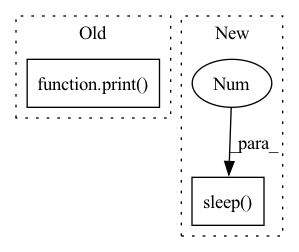

Pattern ID :20086
Before Change
//endregion
print( f<filter-progress>{(step/number_of_scans) + 2*delta}</filter-progress>)
sys.stdout.flush()
//region ===== SAVE RESULT =====
After Change
time.sleep(0.5)
print(f<filter-progress>{2}</filter-progress>)
sys.stdout.flush()
time.sleep(0.5 )
print(f<filter-progress>{0}</filter-progress>)
sys.stdout.flush()
time.sleep(0.5)
In pattern: SUPERPATTERN
Frequency: 3
Non-data size: 2
Instances Fragment ID: 65775663
Project Name: dcbia-ortholab/slicerautomateddentaltools
Commit Name: 41ae34eb06b791f27ccd49d3395a69ffec5d9fe8
Time: 2022-07-06
Author: max.gillot.69@gmail.com
File Name: AMASSS_CLI/AMASSS_CLI.py
M Class Name: AnonimousClass
N Class Name: AnonimousClass
M Method Name: main(1)
N Method Name: main(1)
M Parent Class:
N Parent Class:
M File Name: AMASSS_CLI/AMASSS_CLI.py
N File Name: AMASSS_CLI/AMASSS_CLI.py
M Start Line: 756
M End Line: 965
N Start Line: 758
N End Line: 939
Before Change
exit(1)
else:
print("cluster fail build")
print( "begin delete mpijob %s" % KFJ_TASK_NAME)
// 删除旧的mpi
if KFJ_RUN_ID:
k8s_client.delete_crd(group=CRD_INFO["group"],
version=CRD_INFO["version"],After Change
// k8s_client.watch_pod_log(name=pod["name"],namespace=KFJ_NAMESPACE) // 阻塞的，直到pod结束
time.sleep(10 ) // 等待crd状态更新结束
crd = k8s_client.get_one_crd(
group=CRD_INFO["group"],
version=CRD_INFO["version"], Fragment ID: 65775666
Project Name: tencentmusic/cube-studio
Commit Name: 3e0bd6a497f21c4957755817352ba2d942984874
Time: 2022-07-26
Author: pengluan@tencent.com
File Name: job-template/job/horovod/start.py
M Class Name: AnonimousClass
N Class Name: AnonimousClass
M Method Name: main(0)
N Method Name: main(0)
M Parent Class:
N Parent Class:
M File Name: job-template/job/horovod/start.py
N File Name: job-template/job/horovod/start.py
M Start Line: 282
M End Line: 344
N Start Line: 291
N End Line: 343
Before Change
sys.stdout.flush()
time.sleep(0.5)
print( f<filter-progress>{0}</filter-progress>)
sys.stdout.flush()
with torch.no_grad():
for step, batch in enumerate(pred_loader):After Change
data_list = []
print(f<filter-progress>{0.99}</filter-progress>)
time.sleep(0.2 )
print(f<filter-progress>{2}</filter-progress>)
sys.stdout.flush()
number_of_scans = 0 Fragment ID: 65775684
Project Name: dcbia-ortholab/slicerautomateddentaltools
Commit Name: 8f9e76bd5aa05d66c16f77078dafee469f7a315b
Time: 2022-07-01
Author: max.gillot.69@gmail.com
File Name: AMASSS_CLI/AMASSS_CLI.py
M Class Name: AnonimousClass
N Class Name: AnonimousClass
M Method Name: main(1)
N Method Name: main(1)
M Parent Class:
N Parent Class:
M File Name: AMASSS_CLI/AMASSS_CLI.py
N File Name: AMASSS_CLI/AMASSS_CLI.py
M Start Line: 718
M End Line: 879
N Start Line: 707
N End Line: 951